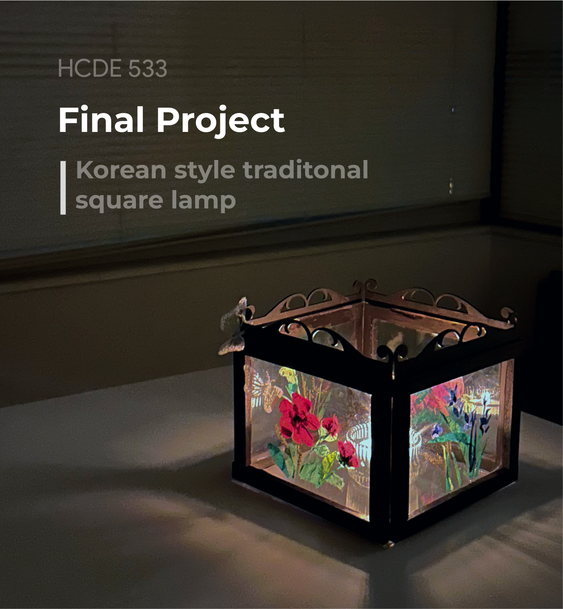
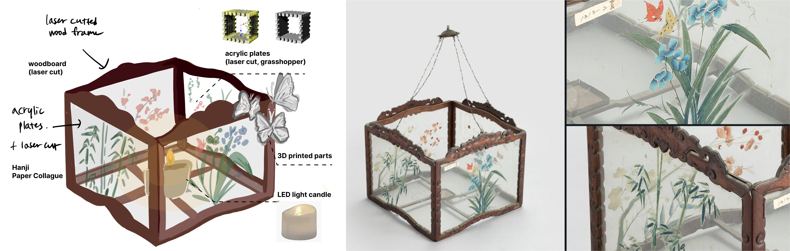
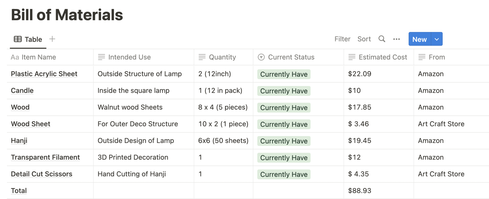
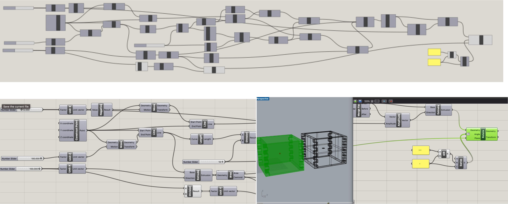
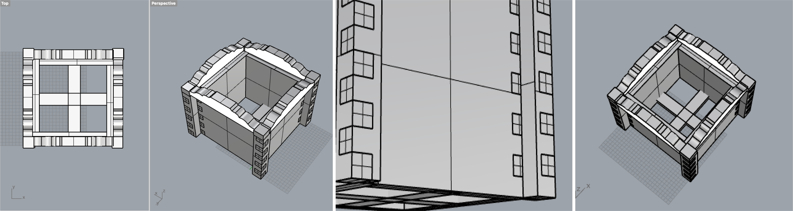
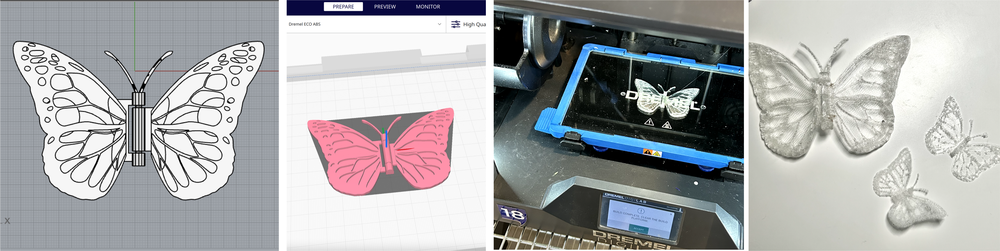

Final Project
Korean style traditonal square lamp

Concept & Idea Sketch ✍️ : Korean traditional glass lamp

This is a traditional Korean-style square glass lamp that was used in the Joseon dynasty, usually in the palace. This lamp usually hangs outside the palace when a party or event happens all night. I found the images of this lamp in the article and decided to re-design it in my style with the techniques that I learned during the digital fabrication class.
1. Laser Cutting : outside lamp wall (acrylic plates), structure of the lamp (woodboards)
2. 3D Prinitng : Decoration of the Lamp
3. Grasshopper : To design the outisde lamp wall
4. Rhino : Design the lamp structure, decoration parts of the lamp
Bill of Materials 💵

This is the list of materials for the final project. I mentioned the usage of each materials, required qauntities, and their price. I also added the current status so that I can figure out what itmes I currently have and need to order in advance.
Grasshopper 💻

This is the mood board that I created for the lamp design. I used a warm color palette and traditional Korean drawings using nature elements like flowers, bamboo, and butterflies.
Rhino Modeling & Rendering ⬜️

3D Printing 🖨

Laser Cutting ✂️

Design and Hanji Cutting 🎨
Hanji is a traditional homemade paper. It is made from the inner bark of mulberry, a tree native to Korea and Hibiscus meninot, which helps suspend the individual fibers in water. It has unique texture and transparency.

Final Deliverable

Appendix
Link to the Rhino fileCitation
Grasshopper Tutorial with Parametic Modeling